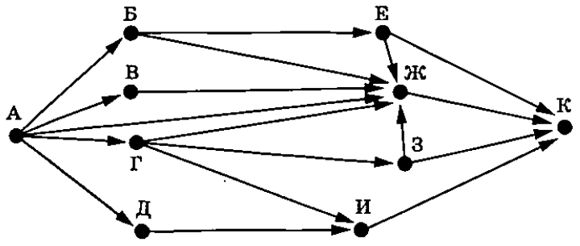

Информатика ОГЭ 2025 года содержит 16 заданий, то есть работа состоит из двух частей. Первая часть содержит 10 заданий с краткими ответами, во второй части 6 заданий, которые необходимо выполнить на компьютере.
С 1 по 12 ответы необходимо перенести на БЛАНК ОТВЕТОВ № 1.
C 13 по 16 необходимо выполнить на компьютере, результатами выполнения заданий являются отдельные файлы. Имя файла которого сохранили необходимо перенести на БЛАНК ОТВЕТОВ № 2.
| Номер задания | Максимальный балл |
| № 1-12 | 1 |
| № 13 | 2 |
| № 14 | 3 |
| № 15 | 2 |
| № 16 | 2 |
| Баллы | Оценка |
| 0-4 | 2 |
| 5-10 | 3 |
| 11-15 | 4 |
| 16-21 | 5 |
1. В одной из кодировок Unicode каждый символ кодируется 16 битами. При подготовке сообщения по грамматике русского языка Вова написал текст (в нём нет лишних пробелов):
«Междометия - это часть речи, которая выражает чувства, эмоции и побуждения, но не называет их. Например, слова а, ай, алё, браво, вольно, кис-кис, полундра, осторожно, здравствуй, физкульт-привет являются междометиями».
Затем Вова удалил из списка одно междометие, а также лишние запятую и пробел — два пробела не должны идти подряд. При этом размер нового предложения в данной кодировке оказался на 20 байт меньше, чем размер исходного предложения. Напишите в ответе название удалённое междометие.
2. От разведчика было получено сообщение:
10111111110011111110001101
В этом сообщении зашифрован пароль - последовательность русских букв. В пароле использовались только буквы А, Б, В, Д, З, Л, О; каждая буква кодировалась двоичным словом по следующей таблице.
| А | Б | В | Д | З | Л | О |
| 00 | 01 | 1011 | 1100 | 1101 | 1110 | 1111 |
Расшифруйте сообщение. Запишите в ответе пароль.
3. Напишите наименьшее натуральное число x, для которого истинно высказывание:
(x кратно 3) И (x кратно 2) И НЕ(x ≤ 60)
4. Между населёнными пунктами A, B, C, D, E построены дороги, протяжённость которых (в километрах) приведена в таблице.
| A | B | C | D | E | |
| A | 3 | 7 | 4 | 18 | |
| B | 3 | 3 | |||
| C | 7 | 3 | 5 | 12 | |
| D | 4 | 5 | 6 | ||
| E | 18 | 12 | 6 |
Определите длину кратчайшего пути между пунктами A и E, проходящего через пункт C. Передвигаться можно только по дорогам, указанным в таблице. Каждый пункт можно посетить только один раз.
5. У исполнителя Омега две команды, которым присвоены номера:
1. прибавь 1
2. припиши слева b
(b - неизвестное натуральное число).
Выполняя первую из них, Омега увеличивает число на экране на 1, а выполняя вторую, приписывает к этому числу слева b.
Программа для исполнителя Омега - это последовательность номеров команд.
Известно, что программа 11221 переводит число 2 в число 775.
Определите значение b.
6. Ниже приведена программа, записанная на пяти языках программирования.
| Бейсик | Алгоритмический язык | Паскаль |
|
DIM t, s AS INTEGER INPUT s INPUT t IF s < 20 OR t > 5 THEN PRINT "YES" ELSE PRINT "NO" END IF |
var s, t: integer; begin readln(s); readln(t); if s < 20 или t > 5 then writeln ('YES') else writeln ('NO') end. |
алг нач цел s, t ввод s ввод t если (s < 20) or (t > 5) то вывод "YES" иначе вывод "NO" все кон |
| С++ | Python | |
|
#include using namespace std; int main() { int s, t; cin >> s; cin >> t; if (s < 20 || t > 5) cout << "YES"; else cout << "NO"; return 0;} |
s = int(input()) t = int(input()) if s < 20 or t > 5: print("YES") else: print("NO") |
|
Было проведено 10 запусков программы, при которых в качестве значений переменных s и t вводились следующие пары чисел вида (s, t):
(-1, 2); (5, 5); (7, 7); (10, 10); (12, -4); (15, 5); (20, -4); (21, 3); (22, 15); (25, 7).
Сколько было запусков, при которых программа напечатала «YES»?
7. Доступ к файлу с именем zip и расширением jpg, находящемуся на сервере cartoon123.ru, осуществляется по протоколу http. Фрагменты адреса файла закодированы цифрами от 1 до 7. Запишите последовательность этих цифр, кодирующую адрес указанного файла в сети Интернет.
1) .jpg
2) http
3) zip
4) cartoon123.
5) /
6) ru
7) ://
8. В языке запросов поискового сервера для обозначения логической операции «ИЛИ» используется символ «|», а для логической операции «И» – символ «&». В таблице приведены запросы и количество найденных по ним страниц некоторого сегмента сети Интернет.
| Запрос | Найдено страниц (в тысячах) |
| Басня | Лица | 270 |
| Басня | 123 |
| Лица | 234 |
Какое количество страниц (в тысячах) будет найдено по запросу Басня & Лица?
Считается, что все запросы выполнялись практически одновременно, так что набор страниц, содержащих все искомые слова, не изменялся за время выполнения запросов.
9. На рисунке – схема дорог, связывающих города А, Б, В, Г, Д, Е, Ж, З, И и К. По каждой дороге можно двигаться только в одном направлении, указанном стрелкой. Сколько существует различных путей из города А в город К, проходящих через город Ж?

10. Среди приведённых ниже трёх чисел, записанных в различных системах счисления, найдите два наименьших, и запишите в ответе их сумму в десятичной системе счисления. В ответе запишите только число, основание системы счисления указывать не нужно.
2716, 1058, 1010102
11.
В поэме Н. А. Некрасова «Русские женщины», текст которой приведён в подкаталоге
каталога Стихи, губернатор, пугая княгиню условиями жизни в казармах
на рудниках, говорит, что пищей жителям там служат два продукта, один
из которых квас.
С помощью поисковых средств операционной системы и текстового
редактора или браузера выясните название второго продукта.
 Скачать файл
Скачать файл12. Сколько файлов объёмом более 200 Кб каждый содержится в подкаталогах каталога Классика/Стихи? В ответе укажите только число.